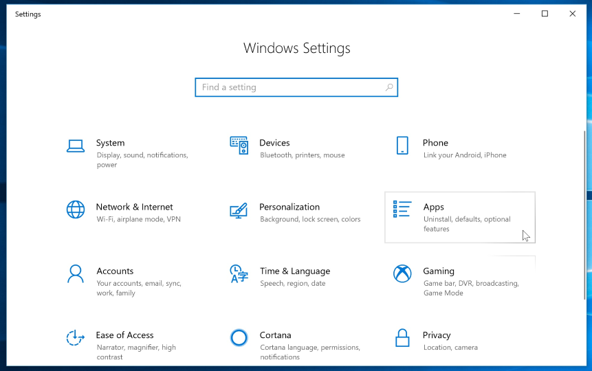
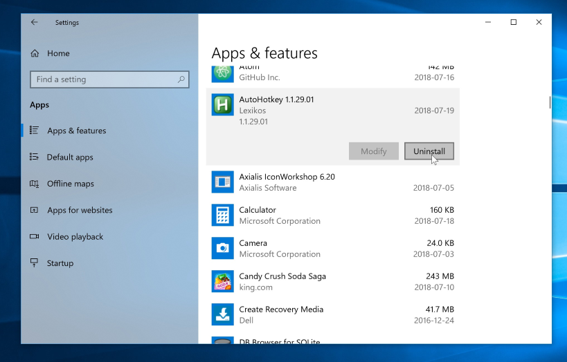
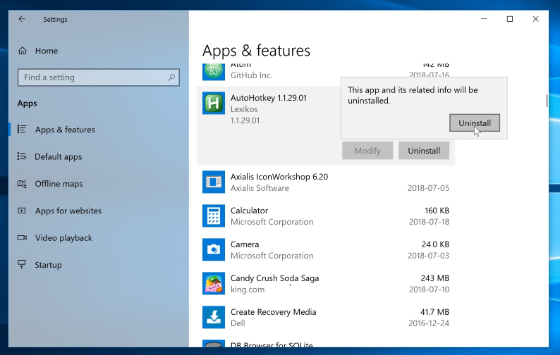
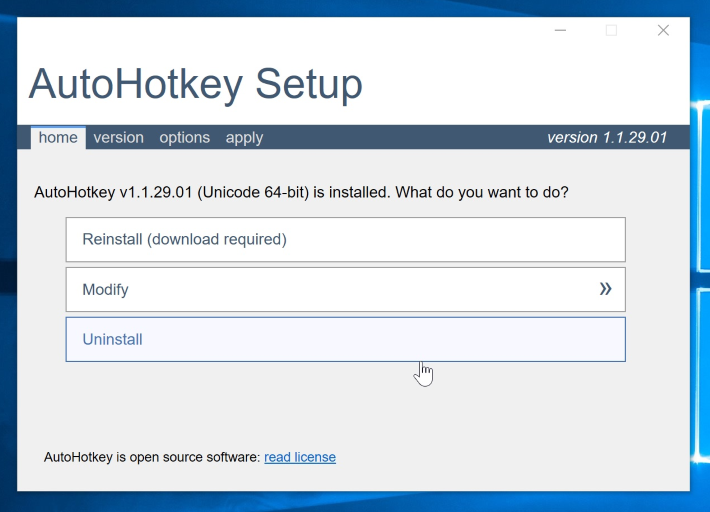
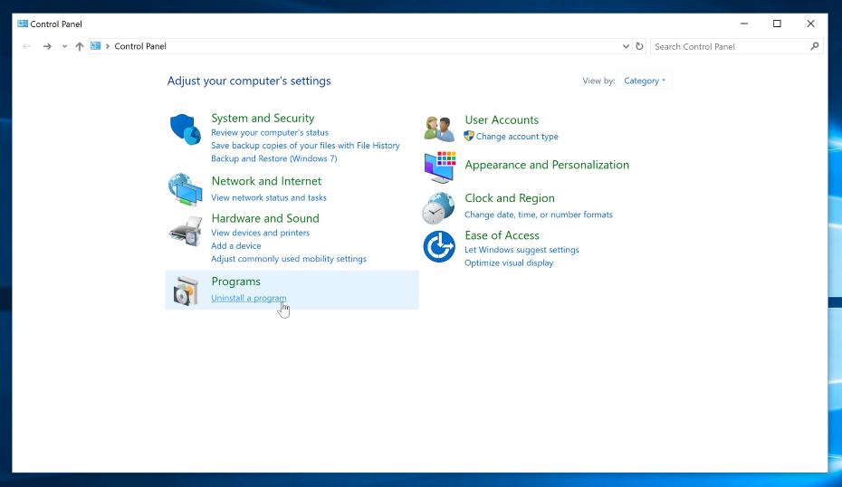
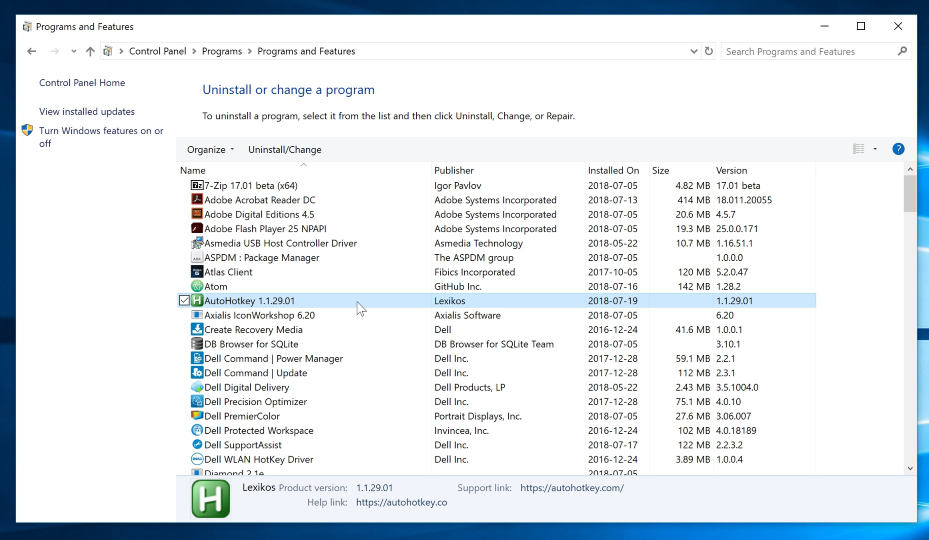
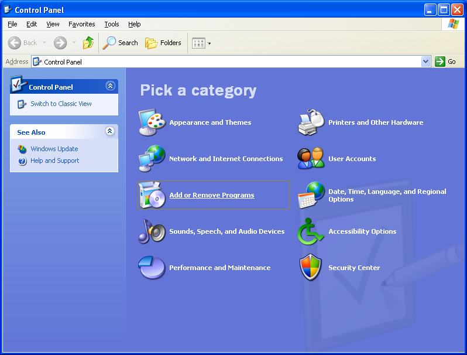
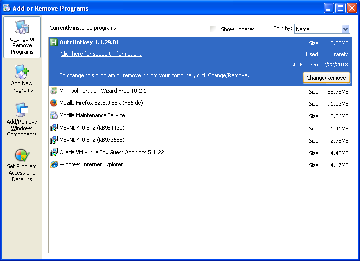
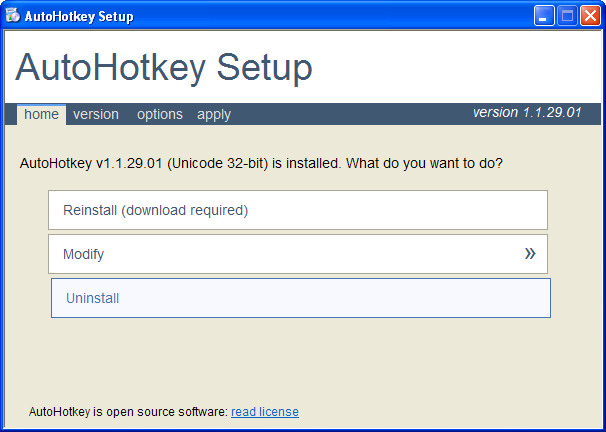

AutoHotkey deinstallieren
Nachfolgend finden Sie Anweisungen, wie Sie AutoHotkey auf Ihrem Betriebssystem deinstallieren können. Je nachdem, welche Version Sie haben, können sich die Schritte etwas unterscheiden.
Bitte navigieren Sie zu der Anweisung, die zu Ihrem Betriebssystem passt.
Windows 10
- Schließen Sie alle AutoHotkey-Skripte und -Prozesse auf Ihrem Computer.
- Klicken Sie auf das Startmenü und dann auf Einstellungen.
- Klicken Sie auf Apps.

- Suchen und klicken Sie unter "Apps & Features" auf AutoHotkey.
- Klicken Sie auf Deinstallieren.

- Bestätigen Sie das mit einem Klick auf Deinstallieren.

- Klicken Sie auf Deinstallieren.

Windows 8, 7 oder Vista
- Schließen Sie alle AutoHotkey-Skripte und -Prozesse auf Ihrem Computer.
- Öffnen Sie die Systemsteuerung:
- Windows 7 & Vista: Klicken Sie auf das Startmenü und dann auf Systemsteuerung.
- Windows 8: Bewegen Sie den Mauszeiger in die rechte obere Ecke des Bildschirms. Klicken Sie auf Einstellungen und dann auf Systemsteuerung.
- Klicken Sie auf "Programm deinstallieren" oder "Programme und Features".

- Doppelklicken Sie auf AutoHotkey.

- Klicken Sie auf Deinstallieren.
Windows XP
- Schließen Sie alle AutoHotkey-Skripte und -Prozesse auf Ihrem Computer.
- Klicken Sie auf das Startmenü und dann auf Systemsteuerung.
- Klicken Sie auf Software.

- Klicken Sie auf AutoHotkey.
- Klicken Sie auf Entfernen.

- Klicken Sie auf Deinstallieren.
